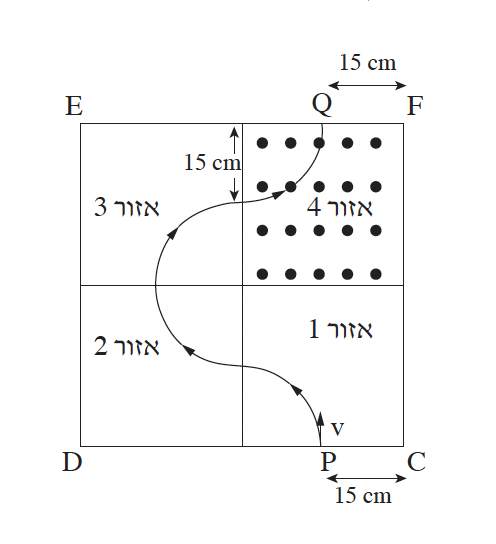

שאלה 5
ריבוע CDEF מחולק לארבעה אזורים 1-4 (ראה תרשים).
כל אחד מארבעת האזורים הוא ריבוע שממדיו 30 cm × 30 cm. בכל אזור שורר שדה מגנטי אחיד שגודלו B = 1T, וכיוונו ניצב לריבוע CDEF. באזור 4 השדה "יוצא מהדף".
חלקיק א טעון חודר לתחום הריבוע CDEF בנקודה P (ראה תרשים), שמרחקה מן הנקודה C הוא 15 cm, במהירות שכיוונה ניצב לקו CD ולכיוון השדה המגנטי, וגודלה v = 3.6 · 106 m/s. מסת החלקיק 6.67 · 10-27 kg.

האם המטען החשמלי של חלקיק א הוא חיובי או שלילי? נמקו. (5 נקודות)
מה הם כיווני השדות המגנטיים באזורים 1, 2, 3? (כתבו X אם כיוון השדה "לתוך הדף", וכתבו • אם כיוון השדה "יוצא מהדף"). נמקו. (6 נקודות)
חשבו את המטען של חלקיק א. (5 נקודות)
האם לאורך מסלול התנועה של חלקיק א מן הנקודה P לנקודה Q וקטור המהירות של החלקיק משתנה:
בכיוונו? נמקו.
בגודלו? נמקו.
(8 נקודות)
חשבו את משך הזמן שבו חלקיק א נע מן הנקודה P לנקודה Q. (5 נקודות)
בנקודה Q משגרים לתוך אזור 4 בזה אחר זה שני חלקיקים, ב ו-ג, באותו גודל מהירות (v = 3.6 · 106 m/s), במאונך ל-EF ולשדה המגנטי שבאזור 4.
לשני החלקיקים ב ו-ג מסות זהות למסה של חלקיק א. לחלקיק ב יש מטען זהה למטען של חלקיק א, ולחלקיק ג יש מטען מנוגד למטען של חלקיק א.
איזה משני החלקיקים - ב או ג - ינוע לאורך מסלול התנועה של חלקיק א? נמקו.
(הניחו כי אין אינטראקציה בין החלקיקים במהלך תנועתם בשדות המגנטיים.) (4.33 נקודות)